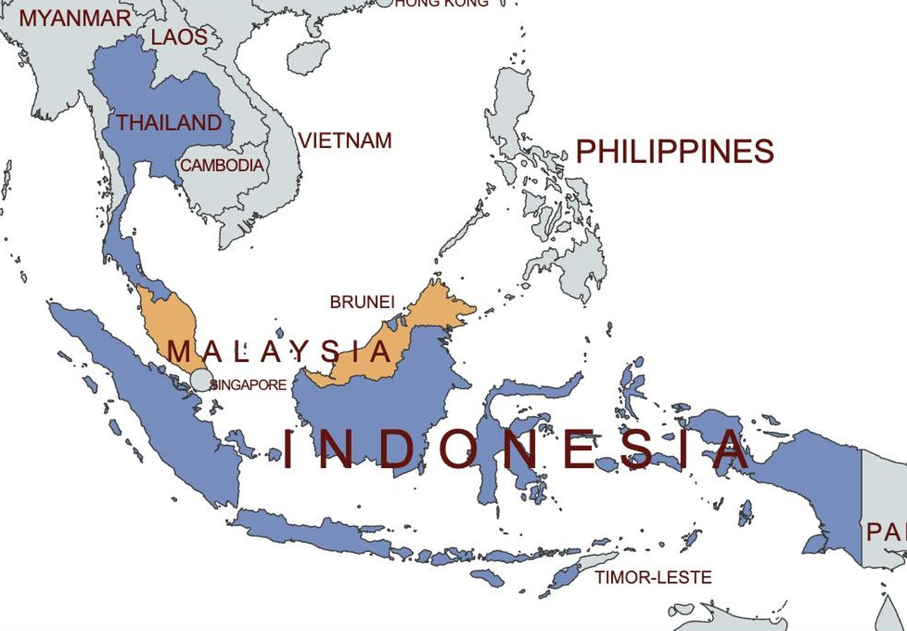
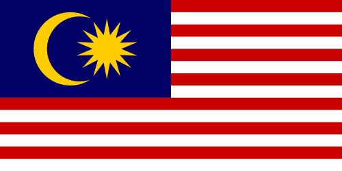
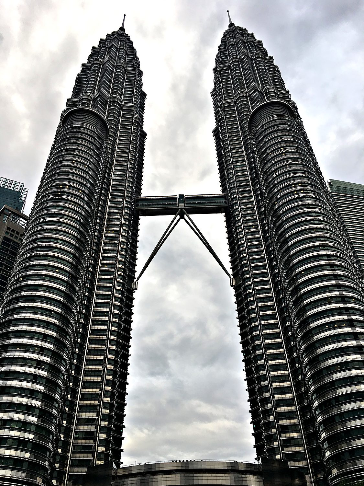
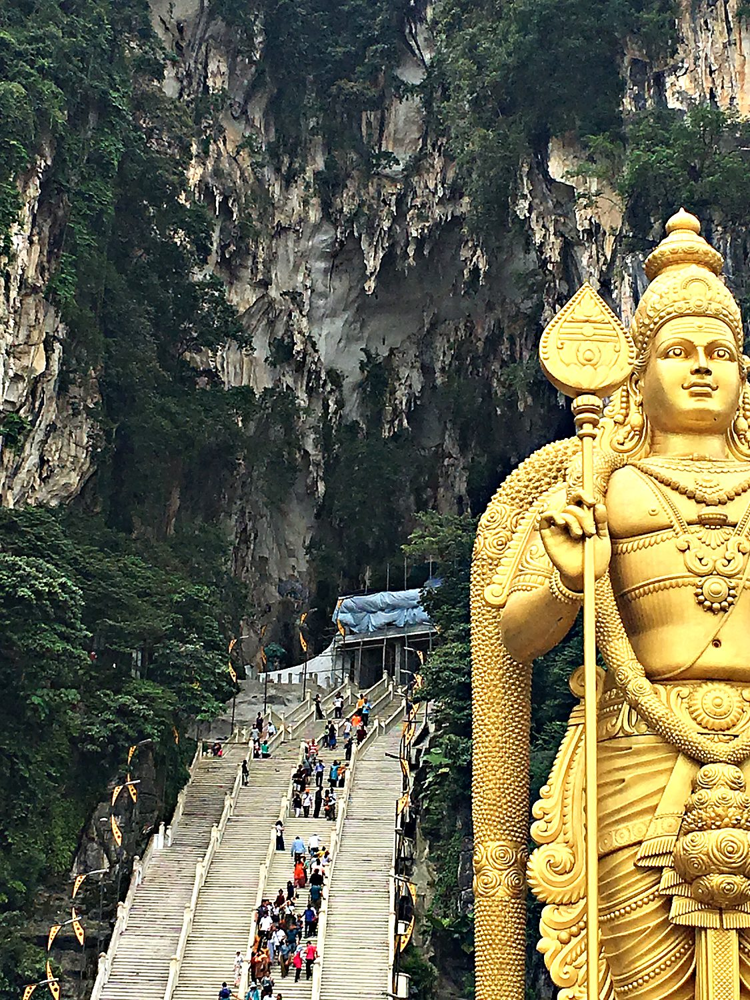
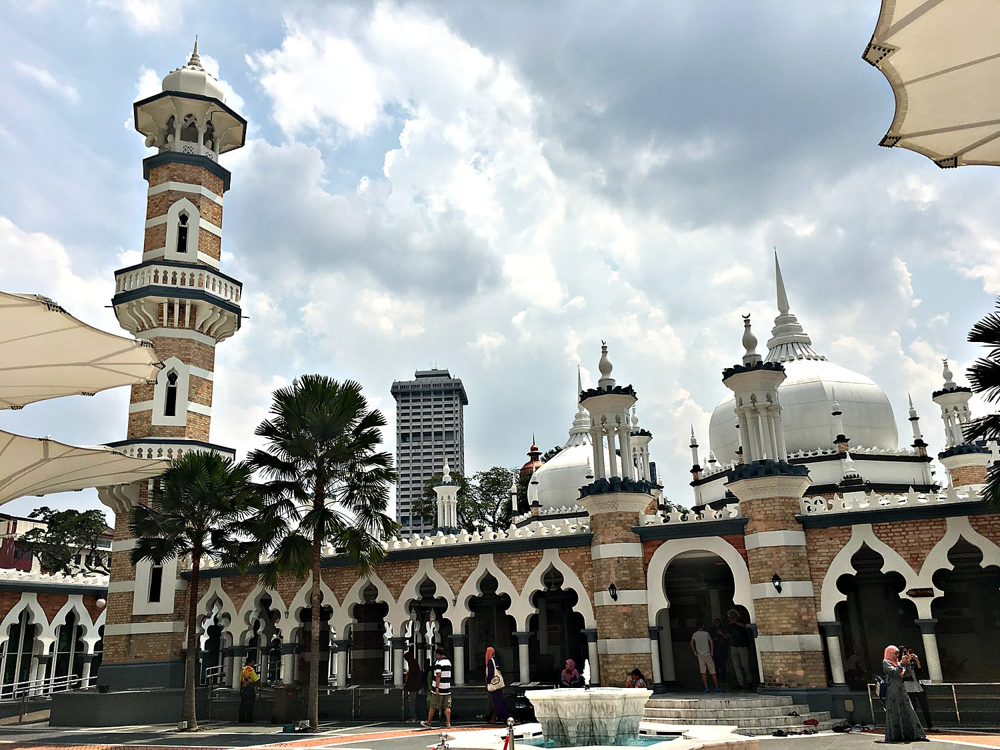

I explored Kuala Lumpur on my own in August 2018, and the city won me over almost immediately. I had braced for a grey megacity and instead found somewhere green, clean, and unexpectedly spacious, with a skyline as varied as its population. My days were a happy mix of the futuristic and the wild. I gawked up at the Petronas Towers, fed monkeys at the Batu Caves, and hiked a razor-backed quartz ridge outside the city, where a colony of red ants staged a coordinated assault on my right arm. My navigational judgment being what it is, I also managed to turn a ten-minute stroll to the KL Tower into an hour-long expedition. Although Kuala Lumpur is a bustling metropolis, the city is surrounded by magnificent lush rainforests.
Kuala Lumpur, the capital, began as a scrappy tin-mining settlement in 1857, and its name means "muddy confluence," after the meeting of two rivers where prospectors first waded ashore. It has come a long way from the mud. Modern Malaysia is one of Southeast Asia's success stories, a genuinely multicultural nation where Malay, Chinese, and Indian communities live side by side. That mix is written into the cityscape, where mosques, Hindu temples, and Chinese shophouses sit within a short walk of gleaming towers. The city also has significant English influence from its time as part of the British Empire. Islam is the official religion, but the country wears its plurality openly.

The land that became Malaysia sat astride the trade routes between India and China, and for centuries its ports grew rich on that traffic. The powerful Malacca Sultanate dominated the region in the 15th century before falling to a succession of European powers. The British eventually consolidated control over Malaya, and reorganized it around two enormously profitable commodities, tin and rubber. Waves of Chinese and Indian labourers arrived to work the mines and plantations, laying the foundations of the diverse society that exists today. The Japanese occupation during the Second World War then shattered the myth of British invincibility and fed a growing appetite for independence.

That independence, known as Merdeka, arrived on 31 August 1957, when the first prime minister declared it on the very square my banner photo overlooks. In 1963 the modern Federation of Malaysia was formed by adding Sabah, Sarawak, and Singapore, though Singapore was expelled just two years later and went its own successful way. The flag that flew over Merdeka Square is called the Jalur Gemilang, or Stripes of Glory. Its fourteen red and white stripes and fourteen-pointed star stand for the states and federal government, while the crescent signals Islam and the blue field unity among the people. Today, Malaysia is one of the most developed countries in Southeast Asia, though significant inequalities across provinces persist. Despite its economic success, Malaysia is not immune from corruption: the nation was rocked in 2015 by the 1MDB money laundering scandal, where its sovereign wealth fund embezzled $4.5 million.
Nothing captures modern Kuala Lumpur like the Petronas Towers, the shimmering steel-and-glass twins that were the tallest buildings in the world when they were completed in 1998. Their floor plan is based on an eight-pointed Islamic star, a quiet nod to the country's faith wrapped in cutting-edge engineering. A slender skybridge links the two towers partway up, and the whole structure seems to change character with the light, industrial by day and jewel-like by night. Standing at the base and craning upward, I found them genuinely awe-inspiring, the confident exclamation mark of a country on the rise.

On the city's northern edge, a vast golden statue of the Hindu god Murugan stands guard over the Batu Caves. This network of limestone caverns forms one of the most important Hindu shrines outside India. At nearly 43 metres, the statue is the tallest of Murugan anywhere, and behind it a flight of 272 rainbow-painted steps climbs into the caves. Each year the site draws enormous crowds for the festival of Thaipusam. The resident macaques are cheerful thieves, though I found them positively genteel compared to their notorious cousins in India, as one accepted my offering of food without trying to mug me for the rest.

Back at the muddy confluence where Kuala Lumpur was born stands Masjid Jamek, one of the oldest mosques in the city. Completed in 1909, it was designed by a British architect in a graceful Mughal-inspired style, all pink brick, arches, and onion domes set among palm trees. For decades it was the city's principal mosque, until the Masjid Negara took on this role in 1965. Its position at the junction of the two rivers ties it directly to the spot where the whole settlement began. It makes a serene counterpoint to the glass towers rising just beyond it, the old heart of the city keeping watch over the new. I found Kuala Lumpur’s Islamic architecture’s ornateness and humility to be especially beautiful.
